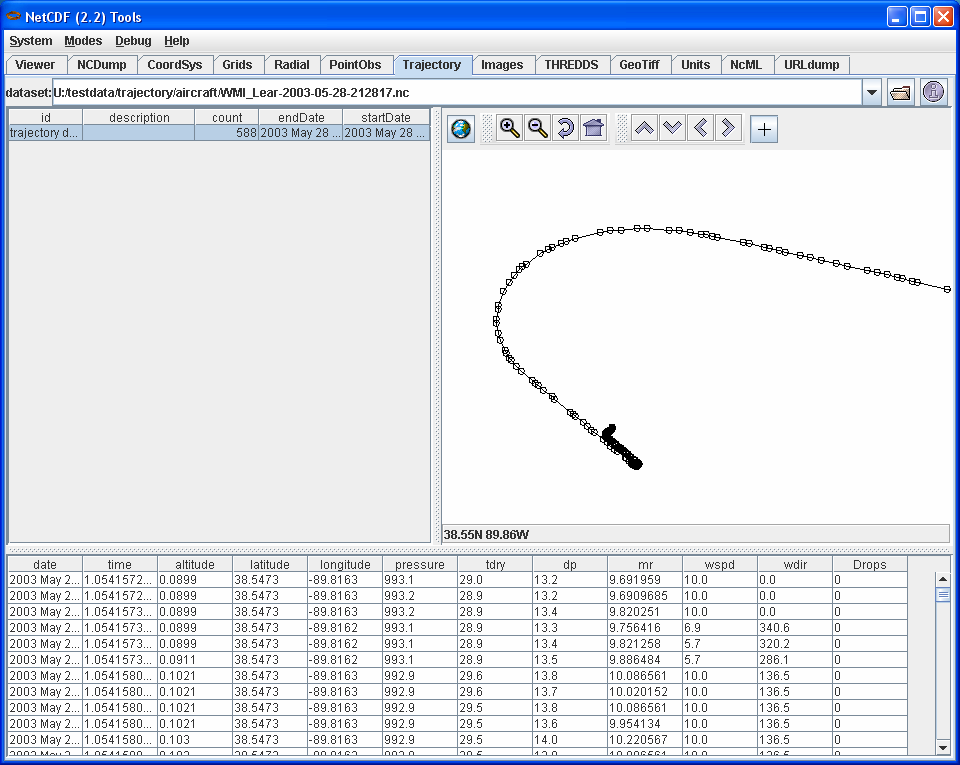

Tutorial: Point, Station, Trajectory Observation Datatypes
An observation
is a collection of measurements at one time and location. Several types
of observation collections are described in the Common Data Model's
Scientific Datatype layer. A Point Observation dataset contains observations which are not necessarily
related in space or time. A Station Observation dataset contains time series of
observations at named locations called stations. A trajectory
is a collection of observations which are connected along a one
dimensional track in space, with time increasing monotonically along
the track. A Trajectory Observation dataset contains one or more
trajectories.

Opening a Point, Station, or Trajectory Dataset
The correct way
to open a PointObsDataset is to use the
TypedDatasetFactory class. This allows third parties to plug-in
alternative imlpementations of PointObsDataset, StationObsDataset, or
TrajectoryObsDataset at runtime. (Note: The TypedDatasetFactory
superceeds the PointObsDatasetFactory and TrajectoryObsDatasetFactory.)
Here is some example code for opening a point dataset:
StringBuffer errlog = new StringBuffer();
ucar.nc2.dt.PointObsDataset ds = (ucar.nc2.dt.PointObsDataset)
ucar.nc2.dt.TypedDatasetFactory.open( thredds.catalog.DataType.POINT,
location, cancelTask, errlog);
if (null == ds)
throw Exception("Cant open PointObsDataset at location= "+location+"; error message= "+errlog);
If the data type is not known ahead of time, call TypedDatasetFactory.open() with null as the first argument.
Example Station Dataset
In ToolsUI:
- In the "StationObs" tab, open "/data/ldm/pub/decoded/netcdf/surface/metar/Surface_METAR_*.nc"

Example Trajectory Dataset
In ToolsUI:
- In the "Trajectory" tab, click on the folder icon to the right of the dataset URL window.
- Navigate to /data/nj22/trajectory/ and select a "*.nc" dataset.
- Select the trajectory item from the list (there will probably be only one item in the list).
- [Optional] Select the world map icon and select a better map background.
- Zoom in to data
